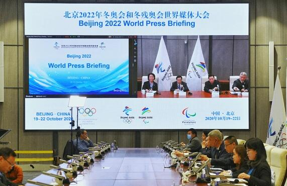

On February 24, 2020, the 2020 world broadcaster conference of Beijing Winter Olympic Games and winter Paralympic Games was held in Madrid, from the International Olympic Committee and Olympic Broadcasting Service) and broadcasters around the world attended the conference. The Beijing Organizing Committee for the Winter Olympics set up a sub venue in Beijing to participate in the video conference, saying that it will focus on both epidemic prevention and control and the preparation of the Winter Olympics. Novel coronavirus pneumonia was originally planned for Beijing, but was affected by the new crown pneumonia epidemic. In the light of the health concerns of all participants, the conference was reorganized in Madrid with the active cooperation of the broadcasting companies and International Olympic Committee.
On March 4, 2020, the Beijing Organizing Committee for the Winter Olympics participated in the IOC Executive Committee meeting by video and said that it would do its best to ensure that the epidemic prevention and control and the preparation of the Winter Olympics were correct. IOC President Bach praised the excellent preparations for the Beijing Winter Olympics. Novel coronavirus pneumonia, Zhang Jiandong and International Olympic Committee Executive Committee said in a statement to the International Olympic Committee Executive Committee that the International Olympic Committee and the executive committee were highly concerned about the outbreak of the new crown pneumonia and gave them strong support and understanding. IOC President Bach sent a special letter to the Chinese Olympic Committee, saying that he fully believed that the preparations for the Beijing Winter Olympic Games would not be affected by the epidemic. Vice president of the International Olympic Committee, Beijing Winter Olympic Coordination Committee President Juan an Samaranch also spoke highly of China's epidemic prevention and control measures and expressed confidence in winning the war
On April 8, 2020, the Beijing Winter Olympics Organizing Committee held the second national (regional) Olympic Committee open day of the Beijing 2022 Winter Olympics in the form of video conference. The event was attended by 67 representatives from the International Olympic Committee and 45 national (regional) Olympic committees. The Tokyo Olympic Organizing Committee and the Paris Olympic Organizing Committee also sent observers to observe the event. During the event, the six business areas of BOCOG national (regional) Olympic committees and Paralympic Committees, including services, accommodation, arrival and departure, finance, technology and rights and interests protection, respectively introduced the progress of the preparations for the 2022 Beijing Winter Olympic Games and answered foreign concerns. Affected by the current global epidemic, foreign representatives are unable to visit the venues in China. Therefore, in the field of venue and infrastructure business, the participants were mainly introduced to the construction progress of competition venues, non competition venues, Beijing Zhangjiakou high-speed railway, Beijing Lijiang Expressway and other projects of Beijing Winter Olympic Games through theme statements, pictures and videos, which impressed the participants. The participants expressed their appreciation to the Beijing Organizing Committee for the Winter Olympics for promoting the construction of venues with high efficiency and quality while paying close attention to epidemic prevention and control. Representatives from 11 business areas such as transportation, logistics, security, media operation, registration, catering, Olympic Village management, ticketing, sports, Olympic family services and Anti Doping attended the meeting and interacted with foreign representatives to answer questions.
On April 24, 2020, the Organizing Committee of Beijing 2022 Winter Olympic Games and winter Paralympic Games (hereinafter referred to as the Organizing Committee of Beijing Winter Olympic Games) publicly solicited the appearance design scheme of the torch of Beijing 2022 Winter Olympic Games and winter Paralympic Games (hereinafter referred to as the torch of Winter Olympic Games).
In April 2020, the Beijing Organizing Committee for the Winter Olympic Games publicly solicited the design schemes for the medals and torches of the Beijing 2022 Winter Olympic Games and the winter Paralympic Games. The requirements of the schemes highlighted the sense of science and technology and the concept of sustainability
On May 15, 2020, the International Olympic Committee, the International Paralympic Committee and the Beijing Organizing Committee for the Winter Olympics simultaneously issued the sustainability plan for the Beijing 2022 Winter Olympic Games and the winter Paralympic Games (hereinafter referred to as the sustainability plan)
On July 30, 2020, the "voice of Winter Olympics" global communication activity jointly organized by Beijing Winter Olympic Organizing Committee and China Central Radio and television was officially launched in Shougang office area of Beijing Winter Olympic Organizing Committee
On September 21, 2020, on the occasion of the 500 day countdown to the Beijing Winter Olympic Games, IOC President Bach accepted an exclusive interview with the reporter of China Central Radio and television through satellite connection. He said that despite novel coronavirus pneumonia, the preparations for the 2022 Winter Olympics in Beijing are still encouraging. Bach believes that the Beijing Winter Olympics will be a historic event, because Beijing is the first city to host both the Summer Olympics and the Winter Olympics. By hosting this winter Olympics, the Chinese government's feat of bringing more people to participate in ice and snow sports is even more commendable.
On the morning of September 22, 2020, the Beijing Winter Olympics Organizing Committee held a chairman's office meeting to study the preparations for the Winter Olympics and deploy the tasks for the next stage. Cai Qi, Secretary of the Beijing Municipal Party committee and chairman of the Beijing Winter Olympics Organizing Committee, presided over the meeting. The meeting fully affirmed the achievements made in the preparations for the Beijing Winter Olympic Games since 2020, including the construction of venues and infrastructure, event organization and test event preparation, event services, publicity and promotion, epidemic prevention and control, and pointed out that as of September 22, 2020, the Beijing Winter Olympic Games has entered the 500 day countdown, the preparation time is tight and the task is heavy. *** The meeting stressed that the "meet in Beijing" test competition is an important starting point for the current preparations; We should always tighten the string of epidemic prevention and control, and do a good job in the epidemic prevention and control of test competitions strictly and practically; We should mobilize the forces of all parties, strengthen the coordination groups of special work, and promote all preparations in a safe and orderly manner. Other matters were also examined.
On September 30, 2020, the urban operation and environmental construction management headquarters of the Beijing Winter Olympic Games held its first plenary meeting and unveiling ceremony, attended by Lu Yingchuan, vice mayor of Beijing, Han Zirong, full-time vice chairman and Secretary General of the Beijing Winter Olympic Organizing Committee, and Zhang Hongbo, deputy commander of the Beijing Garrison. At the meeting, the overall work of environmental construction and urban operation of the Beijing Winter Olympic Games was also deployed, mainly involving the comprehensive treatment of the city appearance and environment, the improvement of the level of urban landscape, the centralized treatment of the "four major" orders such as the city appearance and environment, traffic order, tourism order and market operation order, the strengthening of urban operation control, ensuring efficient and smooth operation, and actively carrying out publicity and mobilization Create a favorable social atmosphere.
On October 10, 2020, guided by the goal of frugality, the IOC, the Olympic Broadcasting Service Company and the Beijing Winter Olympic organizing committee reached a consensus on the integration of the main press center (MPC) and the International Broadcasting Center (IBC) of the Beijing Winter Olympic Games and the winter Paralympic Games. During the event, these two important non competition venues will be merged into the main media center (MMC).
The world media conference of Beijing Winter Olympic Games and winter Paralympic Games was opened by remote video conference at 7 p.m. (Beijing time) on October 19, 2020. More than 400 representatives from the International Olympic Committee, national (regional) Olympic committees, ifs and global media attended the meeting. The world media conference is one of the most important milestones before the media operation competition of the Beijing Winter Olympic Organizing Committee. It is an opportunity to directly introduce the progress of various preparations to the news media all over the world during the preparation of the Beijing Winter Olympic Games. At the meeting, the relevant departments of the Beijing Winter Olympic Organizing Committee made presentations on 15 business areas, including news operation, sports, venue facilities construction, registration, accommodation, technology, transportation, security and news publicity, and answered the questions of the participants. Considering that the media representatives attending the meeting were temporarily unable to visit China due to the impact of the epidemic, the venue simulation system was used to visually display the construction progress, spatial layout and streamline planning of venues and media facilities. According to the arrangement of the meeting, October 21-22 will be the unilateral meeting between the relevant business areas of Beijing Winter Olympic Organizing Committee and the media, focusing on answering the questions concerned by the media. The field visit to the venues in the second phase of the conference will be arranged according to the development of the epidemic.
The participants commented on the progress of the preparation of the Winter Olympics and the innovative forms of online display, expressed confidence in the professional work of the Beijing Winter Olympics Organizing Committee and looked forward to the wonderful presentation of the Beijing Winter Olympics
On the afternoon of October 21, 2020, the plenary meeting of the director level of the venue (Group) operation team of the Beijing Winter Olympic Games and the winter Paralympic Games was held at the Beijing Winter Olympic Organizing Committee. Zhang Jiandong, vice mayor of Beijing and executive vice chairman of Beijing Winter Olympic Organizing Committee, attended the meeting and delivered a speech. Han Zirong, full-time vice chairman and Secretary General of Beijing Winter Olympic Organizing Committee, presided over the meeting. It is reported that the preparations for the Beijing Winter Olympic Games have entered a crucial stage of venue oriented, and the venues will become the final foothold of all preparations. In the early stage, the Beijing Winter Olympic Organizing Committee formulated a series of general policies and procedures from the two levels of the Winter Olympic Games and the "meet Beijing" series of winter sports events; Appointed the Secretary General of competition venue operation, established the venue operation plan team, and promoted the operation design and operation plan preparation of competition venues; The Organizing Committee of "meet Beijing" series winter sports events and the Organizing Committee of individual events have been established, and the preparations for various events have been actively promoted according to the overall plan of the test competition. On the whole, the venue operation is being promoted and implemented as planned.
On October 27, 2020, the Beijing Winter Olympics Organizing Committee released the "Beijing Winter Olympics radio frequency application process" (hereinafter referred to as the "process") on its official website. The application procedure for the Beijing Winter Olympic Games and the requirements for the frequency and technical inspection of the equipment for the 2022 Winter Olympic Games are one of the main elements of the application for the Beijing Winter Olympic Games, as well as the requirements for the frequency and technical inspection of the equipment for the 2022 Winter Olympic Games. The process was jointly drafted by the Beijing Winter Olympics Organizing Committee and the Ministry of industry and information technology. The IOC also participated in the drafting of the process and gave a positive evaluation. The release of the process will help guide users at home and abroad to apply for radio frequency during the Beijing 2022 Winter Olympic Games and winter Paralympic Games, and lay a good foundation for the subsequent issuance of radio frequency use license, equipment testing and certification during the games.
In order to support the development of the cause of the disabled, embody the concept of "sharing the Olympic Games" and guide more disabled people to support and participate in the preparation of the Beijing 2022 Winter Olympic Games and the winter Paralympic Games, the Beijing Organizing Committee for the Winter Olympic Games issued a solicitation announcement on the official website on November 2, 2020, soliciting franchised manufacturers for the employment units of the disabled. This solicitation is aimed at 14 licensed commodity categories such as badges and key chains of Beijing Winter Olympic Games and winter Paralympic Games, other non precious metal products and handicrafts. It is open to the employment units for the centralized placement of the disabled. No more than 3 categories of a candidate enterprise can participate in the recruitment at the same time.
On the evening of December 31, 2020, the sports icons of Beijing 2022 Winter Olympic Games and winter Paralympic Games were officially released
The provincial government arranged the Party group meeting, listened to the work reports of relevant localities and departments, and studied and deployed the key tasks of the next stage of Winter Olympic preparation.
On February 1, 2021, the head of Delegation Meeting of Beijing 2022 Winter Olympic Games was held in the form of video. Cai Qi, Secretary of the Beijing Municipal Party committee and chairman of the Beijing Winter Olympic Organizing Committee, and Bach, President of the International Olympic Committee, delivered a speech at the opening ceremony by video
The torch "flying" of the 2022 Beijing Winter Olympic Games and winter Paralympic Games was officially launched on February 4, 2021
On July 4, 2021, the delivery ceremony of the International Broadcasting Center for the Beijing Winter Olympic Games and winter Paralympic Games was held in phase II of the National Convention Center
According to the news on July 9, 2021, the fire control acceptance of the construction project of the first comprehensive pipe gallery of medium and high mountain tunnel in China - the supporting comprehensive pipe gallery project outside the Yanqing competition area of Beijing 2022 Winter Olympic Games and winter Paralympic Games has been completed, marking that the service guarantee construction of the competition area has entered the final stage of completing the acceptance procedures
©2022 Beijing Winter Olympic Games